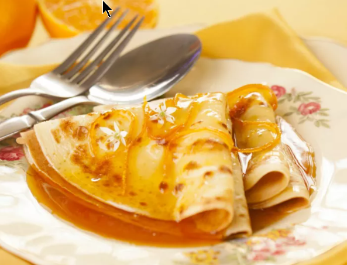

Crêpes Suzette

Crêpes Suzette sunt un desert din Franța pe bază de clătite, unt, zahăr caramelizat,
suc și coajă de portocale și lichior Grand Marnier. Povestea lor de origine este una disputată,
existând două versiuni cunoscute.
Prima versiune spune că aceste clătite au fost descoperite din greșeală, de către Henri Charpentier, p
e vremea când avea 14 ani și era un asistent de ospătar. El ar fi trebuit să pregătească un desert pentru
Regele Edward al VII-lea din Marea Britanie (care la acea vreme era încă prinț) și oaspeții lui, printre
care și o franțuzoaică frumoasă, pe nume Suzette. Charpentier ar fi ars din greșeală desertul, însă gustul
ar fi fost atât de bun încât l-a servit invitaților așa, aceștia fiind foarte încântați – prințul chiar
sugerând ca desertul să fie botezat după Suzette.
Cealaltă versiune spune că acest desert ar fi fost denumit după actrița Suzanne Reichenberg, care activa
sub numele de scenă Suzette. În 1897, ea ar fi apărut într-o piesă de teatru cu rolul de slujitoare,
servind clătite pe scenă. Monsieur Joseph, proprietar al Restaurantului Marivaux, ar fi fost cel care
a gătit clătitele. El le-a flambat, pentru a menține atenția publicului și a le servi calde actorilor.
Ingredients
- 15 foi de clătite
- 150 g zahăr brun
- 10 g coajă rasă de portocale
- 200 ml suc proaspăt stors de portocale
- 120 g unt gras cu cel puțin 80% grăsime
- 40 ml lichior Grand Marnier
Mod de preparare:
- Zahărul se lasă la caramelizat într-o tigaie. Nu se amestecă până se topește, altfel ar putea apărea cocoloașe care se topesc mai greu.
- Se adaugă sucul de portocale și coaja rasă și se lasă puțin, până când sosul se reduce.
- Se adaugă și untul. Sosul va căpăta o consistență spumoasă și se va umfla puțin, așa că acest pas se realizează cu grijă.
- Când untul s-a topit, se adaugă cinci clătite în tigaie.
- Se toarnă lichiorul și se flambează. Se lasă clătitele două minute.
- Clătitele se scot pe o farfurie și se repetă pașii 4 și 5 cu restul de clătite rămase.
- Clătitele se servesc cu sos pe lângă. Opțional, se poate adăuga coajă rasă de portocale și deasupra acestora.
Produs final